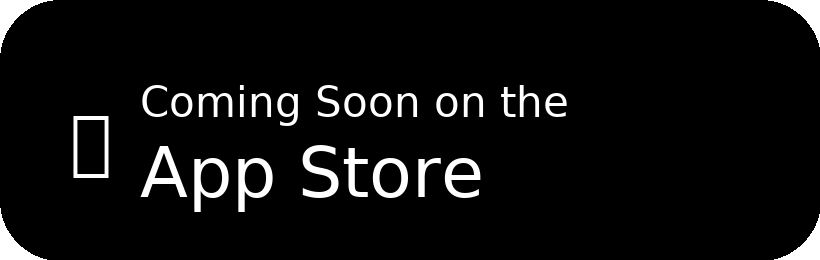

Emerging research suggests that gamma-frequency (around 40 Hz) light and sound stimulation
may support aspects of brain health. We’re encouraged by the growing body of work—from MIT and other labs—and
want to make exploration accessible to everyone.
My mom was one of the sharpest people I’ve ever known—an engineer who graduated from
Tsinghua University, the top university in China. In her final months, she didn’t recognize
her own family. That loss changed me. I’m not an engineer and had no app-building experience,
but I decided to challenge myself and create LucidWave so others might not have to go through
the same thing unnecessarily. 100% of profits from the subscription go to brain research
and supporting brain care.

How to practice it
Research protocols often use about 60 minutes daily of 40 Hz stimulation. You can ease in and
build a routine that fits your life:
Sound-only in the background: Start with 40 Hz audio while you do other tasks. LucidWave supports background audio so you can keep using your phone.
Light + sound at night: Before bedtime, with lights off, place your phone face-up. The indirect flicker can be present without staring directly at the screen.
LucidWave is for wellness and self-care. It isn’t a medical device and doesn’t diagnose, treat, cure, or prevent disease. If you have a history of photosensitive epilepsy or similar conditions, consult a clinician before using flicker.
Made with love, for someone I love
LucidWave is my personal project turned public invitation: try a gentle practice, share it with
someone you care about, and contribute to the science.
Mom at Tsinghua University
Mom at 88
Donations so far
Together we can help millions. We donate all profits from subscriptions.
$0 raised to date
(Updated monthly)
FAQ
Is LucidWave a medical treatment?
No. It is a wellness and self-care app. It does not diagnose, treat, cure, or prevent disease.
Do I need to stare at the screen?
No. Many users prefer indirect light or sound-only mode. Benefits may still be possible without direct staring.
Why a subscription if you donate all profits?
Subscriptions cover hosting and app development costs. Everything beyond that goes to brain research and care.
When will the app be on the App Store?
Soon. The iOS app is in preparation for release. Updates will be posted here.
Does it work on Android?
Currently iOS only. Android may be considered in the future.
How long should I practice daily?
Research often uses ~60 minutes/day. Start small and build up as it fits your schedule.
Is it safe for everyone?
Not recommended if you have photosensitive epilepsy or light sensitivity. Reduce brightness, shorten sessions, and stop if uncomfortable.
Share this project
If LucidWave resonates with you, share it with others and spread the word: